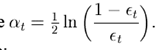

一 做项目的整体介绍
1大致背景及分工：这个项目是导师想与海康威视公司，在智能视频图像处理方面进行合作前的一个预热项目。我们需要做的工作主要是（这个项目是用来解决什么问题的？）关于智能辅助驾驶系统方面的，通过安装再运动车辆上的摄像机获取车辆前方的视频信息，然后对视频序列中进行相应的信息提取。每个同学分工做不同的部分，（项目架构）包括车道检测、白天与夜间的车辆检测、道路标志识别，以及行人检测。
2 个人负责：（ 介绍自己做的部分时，要做好面试官询问细节的思想准备 ）我主要负责的行人检测这一块，其次在第一学年也做过车道检测项目。
行人检测项目介绍：（3000）
根据导师的需求，我们定了应用场景，使用红外摄像机获取视频图像，针对具体环境中的行人进行检测。在行人检测中，最重要的两个指标就是 检测效果 和 检测速度。针对需求，我需要在特定的场景下做相应的创新和优化工作。
第一：（描述下什么是行人检测）行人检测中，最重要的两个过程是 特征提取 和 分类器训练。为了更加深刻的理解这个过程，学习了目前在该领域较好的模型（可以说 特征有哪些...训练模型有哪些...明白各自的优缺点）；
第二：针对特征提取过程，自己提出了一个新的混合特征，以及针对红外场景，提出了一个新的描述亮度信息的描述符HOI和改进版本DBHOI。
第三：针对检测速度慢，经过分析整个流程，针对最耗时的特征金字塔构造，利用了近似计算方法。
车道检测项目介绍：（3500）
整体介绍：
项目流程：根据单目摄像头获取到的视频图像序列，进行连续的处理。首先针对每一帧图像进行预处理（可以展开哪一步处理）；然后利用霍夫变换原理，进行直线检测（这里可以提自己的创新点即循环霍夫变换）；得到许多疑似车道线后，根据条件（...）进行删选，最后进行聚类。
1 预处理
1）提取图像的ROI，即下半部分14/25。
2）获取ROI中的整体像素 均值和方差：threshold = u + 0.8*方差（可改进的地方）。
3）进行Canny边缘检测。主要是图像的灰度值变化处的度量、检测和定位。cvcanny(源图像，目标图像，阈值1[80]，阈值2[180]，核大小)。
4）消除文字干扰。利用历史车道线的信息，因为车道线具有固定的结构，根据车道线的垂直方向上的宽度信息，去除文字的边缘。（文字边缘一般比车道边缘大许多）
2 循环霍夫变换 {60,50,40,30,20,10,90};
1）每次霍夫变换完后，存储符合条件的直线，进行各种条件限制，过滤不符合的直线（倾斜角度太小的、距离消失点太大的或横向距离太大的、忽略图像上半部分的）
2）聚类：定义类内阈值<width/8、类间阈值>width/2；合并直线，即计算类内均值；选取直线，先选择较垂直的直线，然后看其倾向，选择第二条车道线。
3）循环结束条件，(dstLineNum<2)&&(currIterNum<maxIterNum)。
3 利用历史好车道信息，进行去除文字干扰。
项目1整体思路整理：
1 行人检测是什么？
行人检测简单的定义，我们可以认为，判断输入图像是否包含行人，如果有，则给出位置信息。
应用：车辆辅助驾驶、智能视频监控、人体行为分析等应用的第一步。在车辆辅助驾驶方面，能够提高驾驶的安全性。
2 目前做的怎么样？它的难点在哪里？主要包括哪几个部分？
现状：
05年前，
基于运动：人体的步态具有特定的周期性。缺点：只能检测运动的人，且需要判断多帧。
基于形状：用于检测静止的人。构建人体模型参数 或者 构建人体模板。背景差分法。帧差法。这些都需要较多的前提假设。
05年后，一般都是基于统计分类（特点：鲁棒性较好；但需要大量的样本）的方法，即通过机器学习从一系列训练数据中学习得到一个分类器。05年时，提出了HOG+SVM模型，行人检测技术得到了很大的发展，不同模型不断的被提出，以及大规模的行人样本库被建立。检测速度和检测精度都得到很大的提高，但是离现实的应用还是有很大一段距离。
难点：（检测的鲁棒性和检测的实时性）
（1）特征描述符的构建： 行人具有刚性和柔性物体的特性，外观易受 穿着、尺度、遮挡、姿态和视角等因素影响，很难构建一个通用的特征向量用于描述一幅图像的行人。
（2）检测速度即实时性：在已提出的 特征描述符 中，HOG是一个较好的能够描述行人的特征构造方法，但是它根据原作者提出的方法进行构建，在标配的机器上，检测一幅图像的时间需要3S，虽然后来有些学者，利用积分图或者高速缓存或者GPU硬件加速等方法进行改进，大概也要300MS。
3 针对难点中的 构造好的特征难 我是怎么做的？（提高检测准确率）
知识概要：
特征分类：
底层特征（颜色、纹理、梯度）。
混合特征（积分通道特征）能从不同的侧面刻画图像特征。
提高检测率：确定行人的候选区域（ROI），降低误检率；通过多特征融合（积分通道特征），从多个不同的方面刻画行人特征，提高准确率；采用部位法（DPM），解决因遮挡而引起的漏检
相应分析：
因为要构建一个通用的特征描述符是极其难的，所以我的一个想法就是针对特定场景，构建特定的特征描述符。我根据导师的要求，我研究的大方向是在红外场景下的道路行人识别。根据特定应用场景的限定，进行专向的分析：红外图像中行人最明显的两个特征信息是 行人轮廓的梯度方向信息 和 行人亮度信息。
具体做法：
针对梯度方向信息：我采用HOG的方式来提取该信息，但是不在与原始的HOG构造过程一样，采用Block与Block重叠的方式计算HOG特征，而是采用线性差值的方式解决块之间的混叠效应。
针对行人亮度信息：因为细粒度的灰度值信息，不能很好的描述行人和背景的区别，比如温度的微弱变化时，行人的姿态微弱变化时。以及粗粒度的灰度均值块也不能很好的描述行人的信息。因为这两种提取亮度信息的方法都不能区分出行人的亮度信息与其它物体热感应的亮度信息。因此我根据HOG的提取过程，提出了HOI特征描述符，并且根据红外图像下行人的亮度分布信息构造出DBHOI特征（可以具体讲自己小论文的实现）。
4 针对难点中的 检测达不到实时，我是怎么做的？（提高检测速度）
知识概要：
提高检测速度：（1）根据应用场合，充分利用场景的先验信息，确定行人的候选区域（ROI）；（2）关于特征提取，可以利用ＧＰＵ或者积分直方图技术进行快速计算，以及近似计算图像特征金字塔。
具体做法：
传统方法：
构建一个图像特征金字塔，用一个固定模型去检测。（模型不变，检测图像缩放）
构建一个模型缩放金字塔，即用一个训练模型，进行尺度缩放得到，而检测图像不变。（模型不同尺度训练，检测图像不变）
改进方法：
一个混合的方法[包含图像特征金字塔和分类器模型金字塔]，在一个octive(一般是将图像缩放为原来1/2时缩放了的次数，默认为8)之内，用 近似的方法 模拟构建图像特征金字塔；超过一个octive之外的 重新构建一个训练模型，但是该模型不需要重新在新的图像尺度空间中训练得到，只需用 与图像特征金字塔 类似的近似方法得到。
近似模型：
（1）为什么需要近似：在图像进行缩放时，梯度直方图 即它统计的梯度等特征 并不是尺度不变的。那么怎么根据当前尺度图像快速计算金字塔中临近的放大或缩小后的图像特征？
（2）分析步骤：首先分析对象是 样本库中所有的图像的 直方图的 一个bin的总和，观察它的能量变化情况。然后的分析对象是 将得到的 近似参数作用于单幅图像，进行检验。
样本库所有图像：每次缩放[1/8,2/8,...8/8...24/8]后，计算每幅图像的 特定的bin的梯度能量值。然后针对这些能量值和缩放前的能量值相比 得到一个 比例值r = q（缩放后）/q(缩放前)，计算这个比例值的均值和方差。
（3）得到近似模型：根据每次缩放的比例不同，得到不同的能量比例值的均值和方差。
[1]分析均值：可以根据这些均值和缩放比例拟合出一条直线（最小二乘法）的对应关系就能用于以后的近似计算。
[2]分析方差：刻画了随机变量的取值与其数学期望的偏离程度，所以只要将方差的大小控制在合理的范围内，计算出来的结果就不会很大的偏离实际值。（缩小一倍之内，方差一般都小于0.1）
5 针对难点做了分析后，我做的效果怎么样？怎么评价的？
说性能评价时，因为在红外情况下，还没有统一的数据集，用于测试不同模型的性能优劣。所以我们自己建立起来的训练库和测试样本集，只能证明一个相对性能。
（1）特征构造结果：加入DBHOI后，能够有效排除像汽车轮胎等物体的干扰。在相同的样本集上进行训练和检测。HOI（）比简单的灰度值提高了4%，DBHOI比HOI提高了10%。
（2）近似计算结果：对于一张640x480的图像 最后要缩小到 128x64大小 需要缩放 8+8+3 = 19层。简略估计 10-20倍的性能提升。比如说原先需要2000ms的计算时间，现在只需要100-200ms。在自己的程序中运行的时间大概要190ms。如果开启vs简单的并行运行，可以降到150ms.
6 你是怎么通过提取图像特征，然后训练到分类器的？（主要讲adaboost）
（1）特征提取的本质是降低数据的维度，提取正样本数据之间的共性。
（2）根据弱分类器的评价标准，每次选取一个最好的弱分类器。然后计算权重更新值，


增大分错样本的权重，减小分对样本的权重。apha为弱分类器的权值。
7 你是怎么用分类器进行检测的？
选择一个固定大小的窗口，也就是训练时固定的正样本的大小，在图像的尺度空间内依次滑动窗口，利用预先训练好的分类器判断窗口内是否包含行人，通过这样的遍历，从而确定行人在图像中出现的位置。
（1）整体滑窗扫描法（简述adaboost+决策树模型的检测过程）
adaboost+决策树模型：
训练好的模型一共会记录三个矩阵，分别是每个弱分类器对应的属性位置（检测窗口计算出来的特征向量中的一维向量位置）、每个决策树桩的分类阈值、决策树每个分支的置信度（有正有负）。迭代的计算每一个弱分类器，当置信度小于我设置的阈值时，认为没有人，一直到迭代结束。
（2）部件法（简述DPM大致检测过程）
（3）SVM模型
其它问题：
1 分类器模型的宽高比例确定
模型的高度为实际行人的高度；宽度一般比较随意，可以任意大小，比如caltech的样本库，宽高比一般定为 宽/高 = 0.41。将在不同图像尺度空间下的行人的高度缩放到100，宽度定位41，然后填充为 [128 64],填充为了消除边缘计算的影响。总的来说宽高比例对检测结果影响不大，但是对最后的定位精度有影响
2 混叠效应的解决
通常的将某个变量范围固定划分为几个区域，由于边界变量与相邻区域也有相关性，所以变量只对一个区域进行投影而对相邻区域完全无关时会对其他区域产生混叠效应。
分块之间的相关性问题的解决：
方案一：块重叠，重复统计计算
在重叠方式中，块与块之间的边缘点被重复根据权重投影到各自相邻块（block）中，从而一定模糊了块与块之间的边界，处于块边缘部分的像素点也能够给相 邻块中的方向梯度直方图提供一定贡献，从而达到关联块与块之间的关系的作用。
加权采用
三线性插值(链接为详细说明的博文)方法，即将当前像素的
梯度方向大小、像素在cell中的x坐标与y坐标这三个值来作为插值权重，而被用来插入的值为像素的梯度幅值。采用三线性插值的好处在于：避免了梯度方向直方图在
cell边界和梯度方向量化的
bin边界处的
突然变化。
有些文献采用的不是块与块重叠的方法，而是采用线性插值的方法来削弱混叠效应。这种方法的主要思想是每个Block都对临近的Block都有影响，这种影响，我们可以以一种加权方式附加上去。
3 样本库的建立
针对红外场景以及道路旁的行人特征，建立了自己的行人样本库。正样本两千张，负样本五千张
4 不同特征的比较？（简单概括定义、比较）
| 名称 | 定义 | 优点 | 缺点 |
| haar特征 | 计算方法：利用黑白矩形模板对应实际像素区域，（白的总和减去黑的总和），
特性：对一些简单的图形结构：边缘、线段，比较敏感，但是只能描述特定走向（水平、垂直）的结构。
思想： | 计算简单 | 描述能力不强 |
sift特征 （2004） | 计算方法：
特性：基于尺度空间的，对图像缩放、旋转等变换保持不变性的局部特征；
思想： |
|
|
HOG特征
（2005） | 计算方法：
特性：通过计算局部区域上的梯度方向直方图。
思想：在一副图像中，局部目标的表象和形状能够被梯度（变化程度）或边缘的方向的密度分布很好的描述。 | 1 （cell）局部上的操作，对图像的几何形变、光照的微弱变化有较好的不变性。
2 （Block）容许行人的细微肢体动作。以及局部像素之间的关系的表征。
3 统计边缘梯度，较强的局部形状描述能力。
| 计算量大，维度高，很难处理遮挡问题。
|
| LBP特征 | 计算方法：将一个像素与其周围的像素值进行对比，并进行编码。
特性：一个纹理特征（对图像区域的视觉感受）。 思想： | 对诸如光照变化等造成的灰度变化的鲁棒性，计算简单 |
|
5 不同训练模型的比较？（简单概括定义、比较）
| 名称 | 定义 | 优点 | 缺点 |
| adaboost | 核心思想：针对同一个训练集，通过改变数据的分布，训练不同的分类器（弱分类器），然后把这些弱分类器组合起来，构建一个最终分类器。
基于投票机制。 | 1 较好的推广性能 | 对outlier比较敏感 |
| SVM | 核心思想：基于结构风险(求经验风险与置信风险的和最小化)（误差最小化，分类误差与几何间隔相关，几何间隔最大化，||W|| 最小化）最小化原理，通过训练学习得到一个非线性的分界线。 | 低泛化误差，容易解释。 | 参数调优和核函数选择敏感。 |
| 决策树 | 核心思想：选择一个属性进行分枝，依据错误率或者信息增益选择。
| 计算简单，可解释性强，能够处理不相关的特征 | 容易出现过拟合 |
| DPM | 核心思想：一个部件组合，既能使每一个部件匹配的好，又能使部件之间的相对关系与模型尽可能的相符。
1 用HOG特征模板刻画每一部件
2 检测窗的得分 = part的匹配得分 - 模型的变化
3latent SVM：能够自动处理part之间的关系
| 能够一定程度上解决人体姿态问题 | 检测速度较慢 |
深度学习
神经网络 | 核心思想：希望通过模拟人脑多层次的分析方式来提高学习的准确性。从实际对象 到 提取特征向量 的这个过程进行自动化，并提取的特征准确。
描述：假设我们有一个系统S，它有n层 （S1,…Sn），它的输入是I，输出是O，形象地表示为： I=>S1=>S2=>…..=>Sn => O，如果输出O等于输入I，即输入I经过这个系统变化之后没有任何的信息损失，保持了不变，这意味着输入I经过每一层Si都没有任何的信息损失，即在任何 一层Si，它都是原有信息（即输入I）的另外一种表示。 |
|
|
6 性能评价标准？
FPPI：false positive per image,误检率，把负样本检测成正样本。
误检率 = FP/(FP+TN),即
miss rate:false negtive rate,漏检率，把正样本没有检测出来。
为什么需要用两个指标来评价检测结果？
要想降低误检率，只要少判断是正样本就可以，但是这样漏检率一定会上升。（可以画图解释）
在一个640*480的图片中，利用步长为4，模型大小为128*64，有13312个窗口需要判断，再经过缩放得到的检测窗口，大概有10万个。
7 什么是机器学习？
计算机怎样模拟或实现人类的学习行为。可以举个小孩学习汉语或英语的例子。
8 什么是弱分类器？
根据某些单一依据来进行粗略分类的分类器，其分类的准确度要求很低，只要达到50%以上即可。
弱分类器的两个评价标准：
（1）误判率：见上面的公式。
（2）熵：刻画样本集中的纯度。 信息增益。
总信息熵H’=p1*H1+p2*H2.，则此时的信息增益ΔH=H-H’。
9 各种adaboost变种的区别？
Discrete Adaboost（DAB），Real Adaboost（RAB）和Gentle Adaboost（GAB）。其中 DAB 是基本算法，后两者是在其基础上的改进算法。它们的主要区别在于DAB要求弱分类器的输出是二值，后两者则将要求放宽到实值
项目1：
二 项目中遇到的问题？你是怎么解决的？
1 HOG+SVM模型中，因为都是通过基本的步骤：即构建图像金字塔和滑窗扫描检测的方法，它的检测速度很慢？
解决方案：
对每幅输入图片要进行4层扫描，分别为图像金字塔层，每层中滑动窗口，每个滑动窗口中滑动的block，每个block中的cell，其实还有每个cell中的像素点
1）通过图像的积分直方图：统计的区域不再是所有像素点的灰度和，而是这个区域内所有像素的直方图，例如：从图像的左上角的起点到图像的右下角统计的就是这幅图像的直方图。
2）通过学习找到一个近似计算图像金字塔方法。
2 在针对红外场景下的道路行人检测时，我们想如何能够针对该场景做特定的优化，使模型有更高的检测率？
三 你认为的闪光点？
经过自己的分析后，针对特定场景，提出了一个新的特征构造方法，并且提高检测率。
四 你认为需要改进的地方？项目中的不足之处？
1 预处理
（1）针对自己的这个项目来说，因为我是对红外场景下的道路的行人识别。也就是说针对的是一个车辆辅助驾驶的一个应用场景，所以为了提高行人的检测速度，可以用车道检测技术 或者 其它非视觉的传感器获取路面信息，行人检测器只需对路面区域进行扫描。
（2）ROI提取，基于红外图像的热点假设，或者针对摄像机的安装位置和摄像机参数，因为它对图像中行人出现的位置和每个位置上目标的大小给出了很多限制，可以减小搜索空间。
2 后处理
对于检测到的行人疑似框，可以用传统的检测方法，进行进一步的确认，比如对称性，行人模板库等。
不足：
3 目前的方法能对直立无遮挡的行人有较好的检测效果，但是对于非站立和有遮挡（车道旁的人大部分都是直立的，但是遮挡还是经常存在的现象）的检测效果并不好，这是本文方法需要改进的地方。
4 对于大规模人群检测效果不好，这也是一个需改进的地方。
五 你在这个项目中学习到什么？
1 最重要的一点是从当初学习辅助开源库opencv、到看各种前沿的模型，最后提出自己的想法或者是改进的思路。从这个过程中，自己学到的是分析和解决问题的能力。比如当我分析各个模型，它们做的都是通用模型，而我根据导师的需要做定制化的优化时，就可以想到自己可以创新的点，也就是把问题具体化。
项目2：
二 项目中遇到的问题？你是怎么解决的？
1 霍夫变换需要设定一个阈值，该怎么取这个阈值？
2 如何排除非道路边缘的干扰？
三 你认为的闪光点？
针对上面的问题解决。
四 你认为需要改进的地方？
1 两个地方的阈值确定：canny检测边缘时的大小阈值；二值化的阈值。因为是为了提取到车道线的边缘，且抑制不是车道线的边缘，所以 第一步：在初始的时候，设置一个宽泛的阈值，canny的高低阈值，高的不能太高，太高可能去掉了车道线的边缘；第二步：在检测到 好车道线时（相当于是根据历史信息来确定阈值），在车道线周围随机选取点，并计算这些值的均值，与方差，然后再更新这个canny阈值。
2 弯道的处理？
五 你在这个项目中学习到什么？
因为刚刚接触图像处理，需要快速的学习新的知识，包括图像方面的、开源库opencv等。通过这个过程让我深切地体会到，并不是学所有的东西都是一步一步的循序渐进。比如开源工具库opencv的学习，自己并不需要去掌握里面的所有，而是要学会快速的找到自己要用的那一部分，以及学会利用它做相关的实验。
具体知识：
一 canny边缘检测算法原理
1、对原始图像进行灰度化 2、去除噪声 3、利用模板计算图像梯度 4、去除一些假边缘的梯度值，即去除梯度方向上非最大梯度值的点（非极大值抑制） 5、双阈值连接
2.1 对原始图像进行灰度化
Canny算法通常处理的图像为灰度图，因此如果摄像机获取的是彩色图像，那首先就得进行灰度化。对一幅彩色图进行灰度化，就是根据图像各个通道的采样值进行加权平均。以RGB格式的彩图为例，通常灰度化采用的方法主要有：
方法1：Gray=(R+G+B)/3;
方法2：Gray=0.299R+0.587G+0.114B;（这种参数考虑到了人眼的生理特点）
2.2 对图像进行高斯滤波
高斯滤波是一种线性平滑滤波，适用于消除高斯噪声，广泛应用于图像处理的减噪过程。通俗的讲，高斯滤波就是对整幅图像进行加权平均的过程，每一个像素点的值，都由其本身和邻域内的其他像素值经过加权平均后得到。高斯滤波的具体操作是：用一个模板（或称卷积、掩模）扫描图像中的每一个像素，用模板确定的邻域内像素的加权平均灰度值去替代模板中心像素点的值。
2）图像高斯滤波
通常滤波和边缘检测是矛盾的概念，抑制了噪声会使得图像边缘模糊，这会增加边缘定位的不确定性；而如果要提高边缘检测的灵敏度，同时对噪声也提高了灵敏度。 实际工程经验表明，高斯函数确定的核可以在抗噪声干扰和边缘检测精确定位之间提供较好的折衷方案。这就是所谓的高斯图像滤波，具体实现代码见下文。
2.3 用一阶偏导的有限差分来计算梯度的幅值和方向
关于图像灰度值得梯度可使用一阶有限差分来进行近似，这样就可以得图像在x和y方向上偏导数的两个矩阵。常用的梯度算子有如下几种：
1）Roberts算子

上式为其x和y方向偏导数计算模板，可用数学公式表达其每个点的梯度幅值为：
2）Sobel算子
上式三个矩阵分别为该算子的x向卷积模板、y向卷积模板以及待处理点的邻域点标记矩阵，据此可用数学公式表达其每个点的梯度幅值为：

4）Canny算法所采用的方法
在本文实现的Canny算法中所采用的卷积算子比较简单，表达如下：

其x向、y向的一阶偏导数矩阵，梯度幅值以及梯度方向的数学表达式为：

求出这几个矩阵后，就可以进行下一步的检测过程。
2.4 对梯度幅值进行非极大值抑制
图像梯度幅值矩阵中的元素值越大，说明图像中该点的梯度值越大，但这不不能说明该点就是边缘（这仅仅是属于图像增强的过程）。在Canny算法中，非极大值抑制是进行边缘检测的重要步骤，通俗意义上是指寻找像素点局部最大值，将非极大值点所对应的灰度值置为0，这样可以剔除掉一大部分非边缘的点。 1）非最大抑制是回答这样一个问题：“当前的梯度值在梯度方向上是一个局部最大值吗？” 所以,要把当前位置的梯度值与梯度方向上两侧的梯度值进行比较；
2）梯度方向垂直于边缘方向。
但 实际上，我们只能得到C点邻域的8个点的值，而dTmp1和dTmp2并不在其中，要得到这两个值就需要对该两个点两端的已知灰度进行线性插值，也即根据 图1中的g1和g2对dTmp1进行插值，根据g3和g4对dTmp2进行插值，这要用到其梯度方向，这是上文Canny算法中要求解梯度方向矩阵 Thita的原因。
完成非极大值抑制后，会得到一个二值图像，非边缘的点灰度值均为0，可能为边缘的局部灰度极大值点可设置其灰度为128。根据下文的具体测试图像可以看出，这样一个检测结果还是包含了很多由噪声及其他原因造成的假边缘。因此还需要进一步的处理。
2.5 用双阈值算法检测和连接边缘
Canny算法中减少假边缘数量的方法是采用双阈值法。选择两个阈值（关于阈值的选取方法在扩展中进行讨论），根据高阈值得到一个边缘图像，这样一个图像含有很少的假边缘，但是由于阈值较高，产生的图像边缘可能不闭合，为了解决这样一个问题采用了另外一个低阈值。在高阈值图像中把边缘链接成轮廓，当到达轮廓的端点时，该算法会在断点的8邻域点中寻找满足低阈值的点，再根据此点收集新的边缘，直到整个图像边缘闭合。
二 霍夫变换
理论：图像中的一个点对应到参数空间中的一条直线。在原图像中的同一条直线上的点，将会对应参数空间中的一簇直线，且这些直线过一个定点（）。
面试官想要听到的，是你发现问题、分析问题、寻找解决方案、最终解决问题的思路与方法。细节并不重要，因为他也未必能完全弄懂每个技术细节。